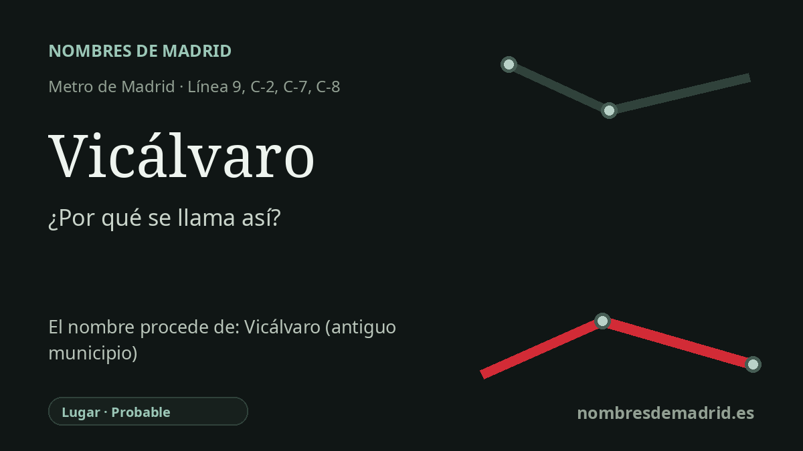

Publicado el · Investigación de Nombres de Madrid · Cómo verificamos cada origen · 9 fuentes consultadas
Respuesta rápida
La estación de Vicálvaro toma su nombre del antiguo municipio de Vicálvaro, incorporado a Madrid a mediados del siglo XX y convertido después en distrito propio. El origen más antiguo del topónimo es discutido, normalmente entre un «Vicus Alvar» y un «Vicus Albus» de base latina medieval.
La historia del nombre
El nombre de la estación es directo y local: Vicálvaro recibe su nombre del antiguo pueblo de Vicálvaro, hoy distrito oriental de Madrid en el que se sitúa la parada de Metro. La estación de la línea 9 abrió el 1 de diciembre de 1998 dentro de la prolongación Pavones-Puerta de Arganda, una obra que la Comunidad de Madrid describe expresamente como destinada a mejorar la movilidad de la población de Vicálvaro, entonces en fuerte crecimiento.
Detrás de la estación moderna hay un topónimo mucho más antiguo. Un estudio municipal de Madrid presenta como punto de partida más aceptado el latín vicus, con el sentido de barrio, aldea o hacienda rural. A partir de ahí, sin embargo, la explicación se divide: una hipótesis interpreta el nombre como Vicus-Alvar, vinculado a un nombre personal como Alvar o Álvaro; otra lo entiende como Vicus-Albus, un «lugar blanco» relacionado con las canteras de yeso de la zona.
La memoria documental del asentamiento llega al menos al siglo XIV. Un extracto de historia local publicado identifica el primer documento conocido con el nombre Vicálvaro como un registro de 1352 conservado en el Archivo de la Secretaría del Vaticano y relativo al pago de diezmos. Más tarde, Vicálvaro formó parte del ámbito jurisdiccional de la Villa y Tierra de Madrid durante el Antiguo Régimen, pero mantuvo también la identidad de municipio separado hasta que la expansión madrileña del siglo XX lo absorbió.
Esa absorción es una de las fechas importantes que hay detrás del nombre. El archivo municipal de Madrid indica que Vicálvaro fue anexionado a Madrid por decreto del Ministerio de la Gobernación de 10 de noviembre de 1950, mientras que la memoria local y la prensa recuerdan el 20 de octubre de 1951 como la fecha en que la anexión se hizo efectiva en la vida municipal. Tras la anexión pasó por distintas adscripciones distritales antes de convertirse en distrito independiente en la reestructuración municipal de 1987.
Vicálvaro también conserva un eco de historia nacional: la Vicalvarada, el levantamiento militar de 1854 asociado al general Leopoldo O'Donnell. La Real Academia de la Historia registra la batalla de Vicálvaro el 28 de junio de 1854, y el posterior Manifiesto de Manzanares ayudó a convertir aquel episodio militar en el movimiento político que abrió el Bienio Progresista. Para la etimología de la estación, sin embargo, ese episodio es contexto y no origen: la estación toma el nombre del lugar, y el significado medieval exacto del topónimo sigue siendo probable, no plenamente demostrado.